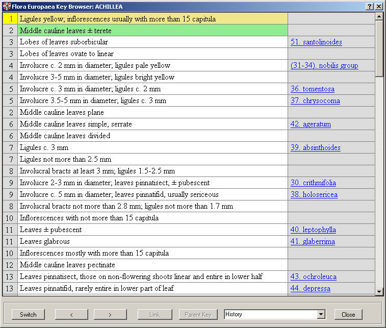

Browser for navigating through the determination keys.

In the main part of the window you see the determination key. The left column contains the id number of the key entry. The column on the right side is the link column containing links to text search function or sub keys. The current entry is marked using yellow background colour, the previous and next one with green background.
For navigation you can use the mouse, the keyboard or command buttons at the bottom of the form: (from left to right)
If the active key line links to a sub key, you see a button names “Link” at the bottom of the form, if there is another link, the same button will be named “Search”.